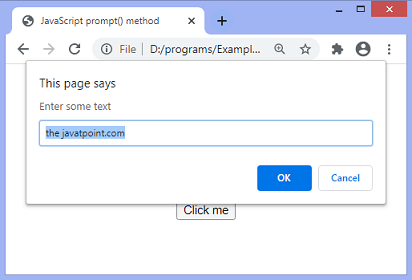

Answer :-
- JavaScript is a scripting or programming language that allows us to implement complex features on web pages.
- Every time a web page does more than just sit there and display static information for us.
- To look at displaying timely content updates, interactive maps, animated 2D/3D graphics, scrolling video jukeboxes, etc.
- We can bet that JavaScript is probably involved.
- It is the third layer of the layer cake of standard web technologies, two of which (HTML and CSS) we have covered in much more detail in other parts of the Learning Area.
Answer :-
- isNaN() is a function property of the global object.
- The isNaN() function determines whether a value is NaN when converted to a number.
- Because coercion inside the isNaN() function can be surprising, you may alternatively want to use Number.isNaN().
- Return value :- "true" if the given value is NaN after being converted to a number; otherwise, "false".
Answer :-
- The Number.NEGATIVE_INFINITY static data property represents the negative Infinity value.
- Any positive value, including POSITIVE_INFINITY, multiplied by NEGATIVE_INFINITY is NEGATIVE_INFINITY.
- Any negative value, including NEGATIVE_INFINITY, multiplied by NEGATIVE_INFINITY is POSITIVE_INFINITY.
- Any positive value divided by NEGATIVE_INFINITY is negative zero (as defined in IEEE 754).
- Any negative value divided by NEGATIVE_INFINITY is positive zero (as defined in IEEE 754).
- Zero multiplied by NEGATIVE_INFINITY is NaN.
- NaN multiplied by NEGATIVE_INFINITY is NaN.
- NEGATIVE_INFINITY, divided by any negative value except NEGATIVE_INFINITY, is POSITIVE_INFINITY.
- NEGATIVE_INFINITY, divided by any positive value except POSITIVE_INFINITY, is NEGATIVE_INFINITY.
- NEGATIVE_INFINITY, divided by either NEGATIVE_INFINITY or POSITIVE_INFINITY, is NaN.
- x > Number.NEGATIVE_INFINITY is true for any number x that isn't NEGATIVE_INFINITY.
Answer :-
- JavaScript was created at Netscape Communications by Brendan Eich in 1995.
- Netscape and Eich designed JavaScript as a scripting language for use with the company's flagship web browser, Netscape Navigator.
Answer :-
- Undeclared variables are those that have not been declared or defined in the current scope.
- While undefined variables are those that have been declared but not given a value.
- Understanding the difference between these two terms is crucial for writing correct and effective JavaScript code.
Answer :-
- The createElement() method in JavaScript can be used to create new items dynamically.
- The setAttribute() method is used to set the attributes of the newly generated element.
- By clicking a button, a modal box appears and collects the required information dynamically.
Answer :-
- A ViewState is a state of a page within a browser wherein the values of controls persist when post back operation is done.
- When another page is loaded, the previous page data is no longer available.
- SessionState is the data of a user session and is maintained on the server side.
Answer :-
- The strict equality ( === ) operator checks whether its two operands are equal, returning a Boolean result.
- Unlike the equality operator, the strict equality operator always considers operands of different types to be different.
Answer :-
Changing CSS with the help of the style property
document.getElementById("id").style.property = new_style
This property is used to set the current class of the element to the specified class.
document.getElementById("id").className = class
Answer :-
fs.readFile( file_name, encoding, callback_function )fs.writeFile( file_name, data, options, callback )
The fs.readFile() and rs.writeFile() methods are used to read and write of a file using javascript.
Answer :-
- for - loops through a block of code a number of times
- for/in - loops through the properties of an object
- for/of - loops through the values of an iterable object
- while - loops through a block of code while a specified condition is true
- do/while - also loops through a block of code while a specified condition is true
JavaScript supports different kinds of loops:
Answer :-
- To convert a string to an integer parseInt(), Number(), and Unary operator(+) function is used in javascript.
- parseInt() function returns Nan( not a number) when the string doesn't contain number.
- If a string with a number is sent, then only that number will be returned as the output.
- This function won't accept spaces.
Answer :-
- The delete operator removes a property from an object.
- If the property's value is an object and there are no more references to the object, the object held by that property is eventually released automatically.
Answer :-
- JavaScript has three kind of popup boxes: Alert box, Confirm box, and Prompt box.
- Alert box
- Confirm box
- Prompt box 


Answer :-
- The void operator is used to evaluate an expression and returns the undefined.
- Generally, this operator is used for obtaining the undefined primitive value.
- It is often used with hyperlinks.
- Usually the browser refreshes the page or loads a new page on clicking a link.
- The javascript:void(0) can be used when we don't want to refresh or load a new page in the browser on clicking a hyperlink.
Syntax is like → < a href = "javascript:void(0);" >
Answer :-
- We can use window.location property inside the script tag to forcefully load another page in Javascript.
- It is a reference to a Location object that is it represents the current location of the document. We can change the URL of a window by accessing it.
Syntax is like →
< script >
window.location = < Path / URL >
< /script >
< script >
window.location = < Path / URL >
< /script >
Answer :-
- Event handlers attached to any DOM element are preserved.
- Replacement is done everywhere.
- It is not possible to append innerHTML.
- Breaks the document.
- Used for Cross-site Scripting.